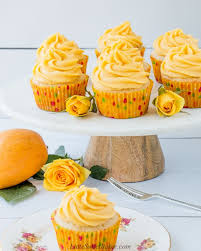

Banana and vanila cupcake

Eating too many calories on a daily basis will cause you to gain an unhealthy amount of weigtht,which increases your risk of heart disease and type 2d banana cupcake and frosting contain saturated fat,which raise your cholesterol
ingredient
- Flour
- Eggs
- Fat usually butter
- sugar
- sail
- Form of liquid (usually milk)
- Leavening agents (such as baking soda)
- Banana flavour
Steps to take to make banana-and-vania-cupcake
- prepare Baking pans
- Allow ingredients to reach room temperature.
- preheat the oven
- stir together dry ingredients.
- combine the butter and sugar.
- Add eggs one at a time.
- Alternate Adding dry and wet ingredients.
- pour batter into pans and bake.